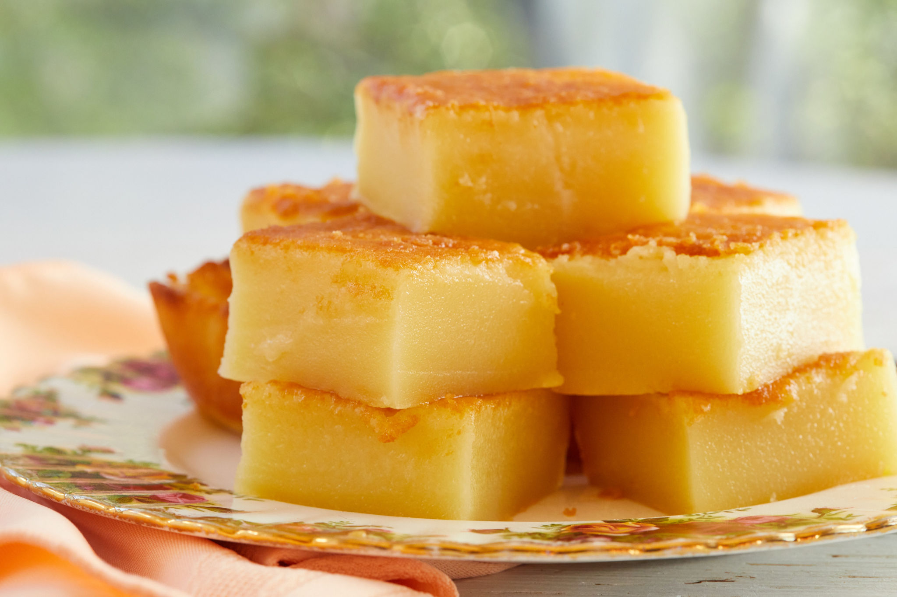

Hawaian Butter Mochi

Description
Butter mochi is a cake made from coconut milk, glutinous rice flour (mochiko), and butter and is a popular dessert in Hawaiian cuisine.
Ingredients
- 1 box (16 oz/450 g) Mochiko Flour (sweet glutinous rice flour)
- 2 cups (16 oz/454 g) granulated sugar
- 1 ½ teaspoons baking powder
- ½ teaspoon salt
- 4 large eggs, at room temperature
- 2 cups (16 fl oz/450 ml) whole milk, at room temperature
- 1 can (13 fl oz/400 ml) coconut milk
- ½ cup (4 oz/115 g) butter, melted
- 2 teaspoons vanilla extract
Steps
- Preheat the oven to 350°F (180°C). Butter a 9x13-inch (23x33 cm) baking pan and line with parchment paper. Set aside.
- In a large bowl mix together the sweet rice flour, sugar, baking powder and salt.
- Whisk in the eggs, milk, coconut milk, butter and vanilla extract until the batter is smooth. To ensure that there are no lumps, pour the mixture through a sieve and directly into your prepared pan.
- Bake for 50-60 minutes or until golden on top. Set aside to cool down completely.
- Cut into 24 squares with a sharp knife. Store in an airtight container at room temperature for up to 2 days. Serve warm with whipped cream or vanilla ice-cream if desired.